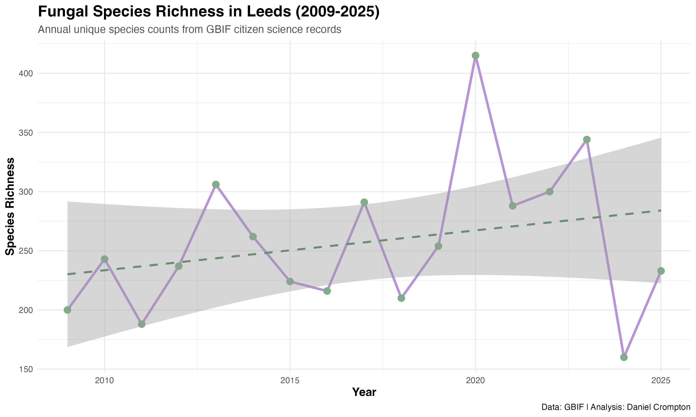
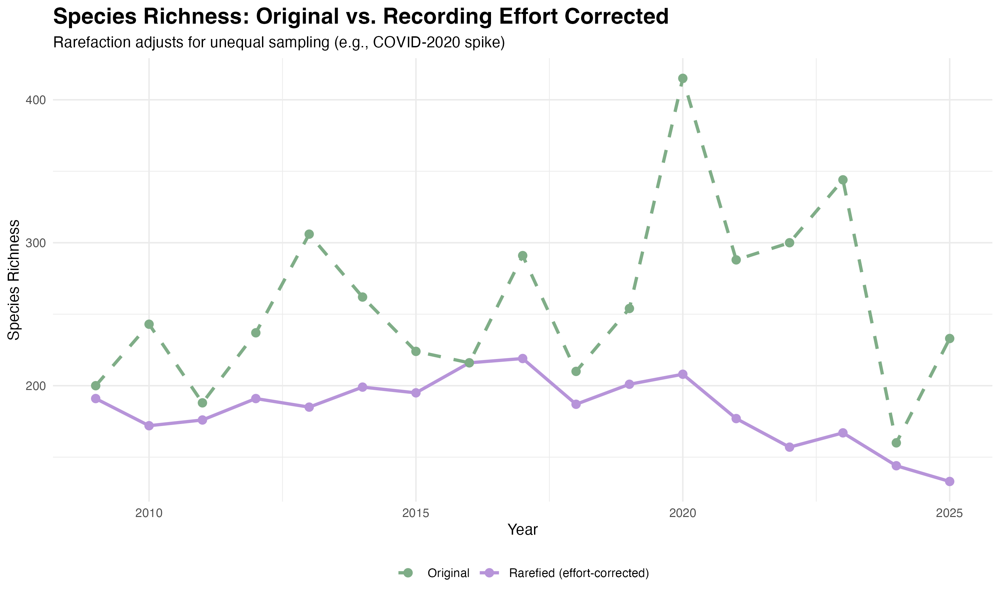
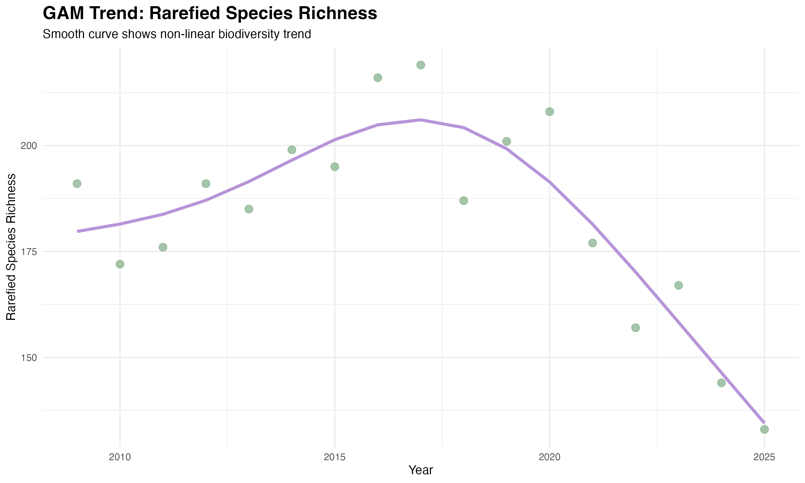
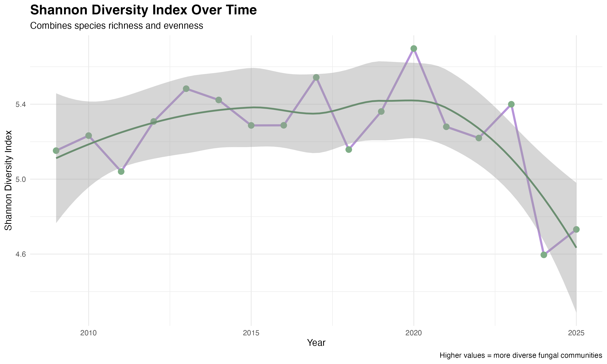
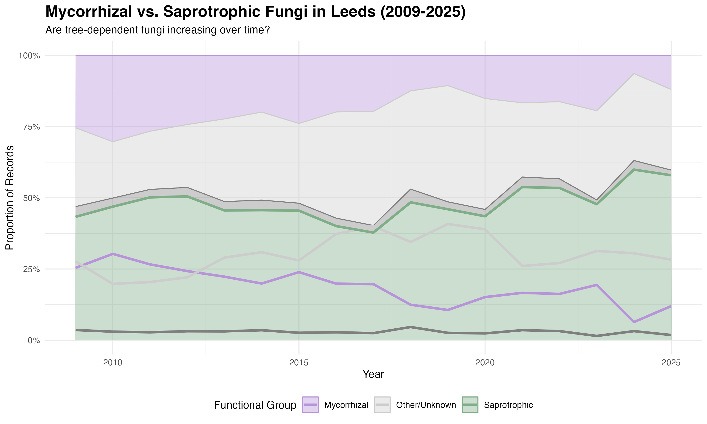
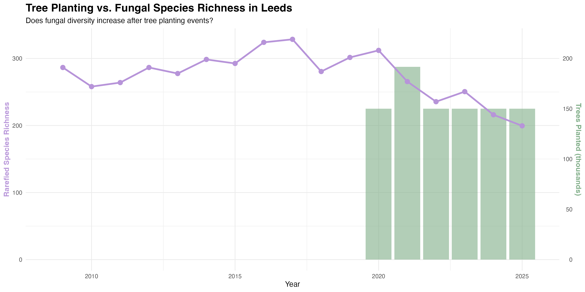

Investigating whether urban tree planting schemes support fungal diversity recovery — using citizen science data to challenge assumptions in restoration ecology
Urban tree planting is widely promoted as a nature-based solution — a way to restore biodiversity, sequester carbon, and improve ecological connectivity in cities. Leeds has seen significant planting activity since 2020, including 160 hectares at Broughton Sanctuary and 62,500 trees across South Leeds between 2021 and 2022.
But there is a question that rarely gets asked: what happens to fungal communities when you plant trees? Mycorrhizal fungi — the underground networks that trees depend on for nutrient exchange — require decades to establish in mature, complex networks. Soil disturbance during planting severs existing hyphal connections, and nursery-grown saplings are often uninoculated, arriving without the fungal partners they need.
This project used GBIF citizen science records to analyse fungal biodiversity in Leeds from 2009 to 2025, asking whether the 2020–2023 planting programmes correlated with the expected increase in fungal diversity — or something more complicated.
Rather than increasing after tree planting, fungal diversity declined. Rarefied species richness peaked around 2015–2017 and has fallen steadily since 2020, with the GAM trend showing a clear post-planting downturn. Mycorrhizal proportion has dropped while saprotrophic fungi — decomposers that thrive in disturbed soils — have increased their relative share. This pattern is consistent with short-term mycorrhizal network disruption caused by soil disturbance during planting, not ecological recovery.
This is a stronger finding than a simple confirmation would have been. It suggests that tree planting without mycorrhizal inoculation, and without protecting existing mature woodland networks, may cause a net fungal loss in the short term — a significant caveat for carbon offsetting schemes that rely on above-ground biomass while ignoring the underground ecosystem.
Raw species richness shows high inter-annual variability, partly driven by recording effort — including a pronounced spike in 2020 likely attributable to increased outdoor activity during the COVID-19 lockdowns. Rarefaction was applied to correct for unequal sampling effort, normalising counts to a consistent sample size per year.
After effort correction, the underlying trend is clear: species richness rose gradually from 2009, peaked in the mid-2010s, and has declined sharply from 2020 onwards. The GAM (Generalised Additive Model) smooth confirms this is a genuine non-linear trend, not sampling noise.

Raw species richness with linear trend — high variability masks the underlying signal

Rarefaction corrects for unequal recording effort, including the 2020 COVID spike

GAM smooth confirms a non-linear trend — peak diversity mid-2010s, clear decline from 2020
The Shannon Diversity Index — which accounts for both species richness and the evenness of their distribution — tells a consistent story. Values were relatively stable through the 2010s, with a brief peak around 2020, before declining sharply from 2021 onwards. The confidence interval widens towards 2025, reflecting reduced data density in the most recent years, but the downward trend is unambiguous.

Shannon Diversity Index — combines richness and evenness. Sharp decline from 2021 onwards
Perhaps the most telling finding is the shift in functional composition. Mycorrhizal fungi — the tree-dependent species that form underground networks — have declined as a proportion of total records from around 25–30% in 2009 to roughly 10–15% by 2023–2025. Saprotrophic fungi, which decompose dead organic matter and are associated with disturbed or early-successional soils, have increased their relative share.
This is precisely the pattern you would expect if soil disturbance during tree planting was disrupting existing mycorrhizal networks: decomposers colonise disturbed ground quickly, while mycorrhizal species, which require host trees and intact soil structure, take years to re-establish.

Mycorrhizal proportion declining while saprotrophic fungi increase — consistent with soil disturbance
Overlaying Leeds tree planting data against rarefied species richness makes the timing of the disruption explicit. Diversity was broadly stable through the 2010s, then declined in step with the major planting programmes beginning in 2020. The data ends in 2025, three to five years post-planting — well within the 5–10 year window that mycorrhizal network re-establishment typically requires.

Tree planting volumes overlaid with rarefied species richness — diversity declines in step with planting activity
Fungal occurrence records for Leeds were downloaded via the GBIF API, filtered to the Leeds administrative boundary and the period 2009–2025. Records were cleaned to remove duplicates, observations without valid coordinates, and entries lacking species-level identification.
Each species was assigned to one of four functional groups — Mycorrhizal, Saprotrophic, Parasitic, or Other/Unknown — using a lookup table cross-referenced against established fungal trait databases. Mycorrhizal classification focused on ectomycorrhizal and arbuscular mycorrhizal species known to associate with broadleaf and conifer hosts common in urban Leeds.
Annual species richness was calculated and rarefied to correct for unequal recording effort across years. Rarefaction standardises counts to the minimum annual sample size, making year-on-year comparisons meaningful regardless of how many records were submitted in a given year.
Shannon Diversity Index was calculated per year to capture both richness and evenness. A Generalised Additive Model (GAM) was fitted to the rarefied richness series using the mgcv package in R, allowing the smooth to capture non-linear temporal trends without imposing a parametric shape.
Annual proportions of each functional group were calculated and plotted as a stacked area chart to visualise compositional shifts over time. This approach shows not just whether diversity changed, but which ecological guilds drove the change.
Leeds City Council tree planting data was collated for the 2020–2025 period, including the Broughton Sanctuary scheme (160 hectares, December 2020) and the South Leeds urban forestry programme (62,500 trees, 2021–2022). Annual planting volumes were overlaid against rarefied species richness on a dual-axis chart to visualise the temporal relationship.
An interactive web map was produced showing the spatial distribution of all GBIF records, colour-coded by functional group. The map allows users to explore recording locations, filter by functional group, and click individual markers for species-level detail.
Most carbon offsetting schemes that involve tree planting focus exclusively on above-ground biomass — the carbon stored in trunks, branches, and leaves. Mycorrhizal networks are estimated to store around 30% of forest carbon in below-ground biomass and soil organic matter. When established woodland is cleared to make way for development, and saplings are planted elsewhere as mitigation, the fungal carbon pool may be net negative for a decade or more.
This is not an argument against tree planting. It is an argument for doing it better: inoculating nursery stock with appropriate mycorrhizal species, minimising soil disturbance during establishment, protecting existing mature woodlands whose networks are irreplaceable on any practical timescale, and monitoring below-ground ecosystem recovery alongside above-ground growth.
This analysis relies entirely on voluntary GBIF observations — records submitted by amateur mycologists and naturalists walking the same parks and woodlands year after year. That recording effort is itself shaped by human behaviour (hence the 2020 COVID spike), and the dataset skews towards charismatic, easily-identified species. It is not a systematic ecological survey.
Nevertheless, the temporal signal is strong enough to be visible through the noise, and the functional composition shift is exactly what the mycorrhizal disruption hypothesis would predict. Citizen science data, properly handled with effort correction and appropriate statistical methods, can surface ecologically meaningful patterns even at city scale.
Data source: GBIF (Global Biodiversity Information Facility) citizen science records
Languages: Python, R
Python libraries: pandas, Folium, requests (GBIF API)
R packages: vegan (rarefaction, diversity indices), mgcv (GAM), ggplot2, dplyr, tidyr
Mapping: Folium (interactive web map)
Open to collaboration on environmental data science projects and actively seeking opportunities in geospatial analysis and ecological restoration